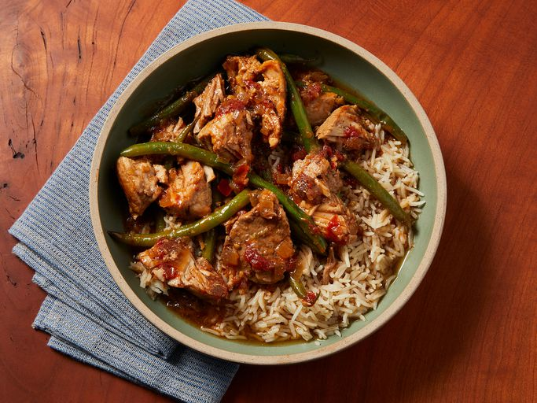

Return to Home
Pork Sinigang

Description
Sinigang is a Filipino soup cooked with pork. Serve with rice and for additional sauce, use soy or fish
sauce. If you want to, you can add what Filipinos call gabi gabi, which is a small taro root. When peeled
they look like potatoes. You can add five to six of them when you add the water and make sure they are
cooked through. Take them out when they are cooked because they can get too soft.
There are different variations of sinigang used with different types of meat, such as pampano or salmon
for a fish sinigang. Pork sinigang happens to be, not just my favorite kind of sinigang but my favorite
dish period.
Ingredients
Yields 4 servings
- 1 tablespoon vegetable oil
- 1 small onion, chopped
- 1 teaspoon salt
- 1 (1/2 inch) piece fresh ginger, chopped
- 2 plum tomatoes, cut into 1/2-inch dice
- 1 pound bone-in pork chops
- 4 cups water, more if needed
- 1 (1.41 ounce) package tamarind soup base (such as Knorr)
- 1/2 pound fresh green beans, trimmed
Directions
-
Heat vegetable oil in a skillet over medium heat. Add onion; cook and stir until softened and
translucent, about 5 minutes. Season with salt.
-
Stir in ginger, tomatoes, and pork chops. Cover and reduce heat to medium-low. Turn the pork
occasionally, until browned.

-
Pour in water and tamarind soup base. Bring to a boil, then reduce heat and simmer until the
pork is tender and cooked through, about 30 minutes.
-
Stir in green beans and cook until tender.

Original Recipe by Allrecipes